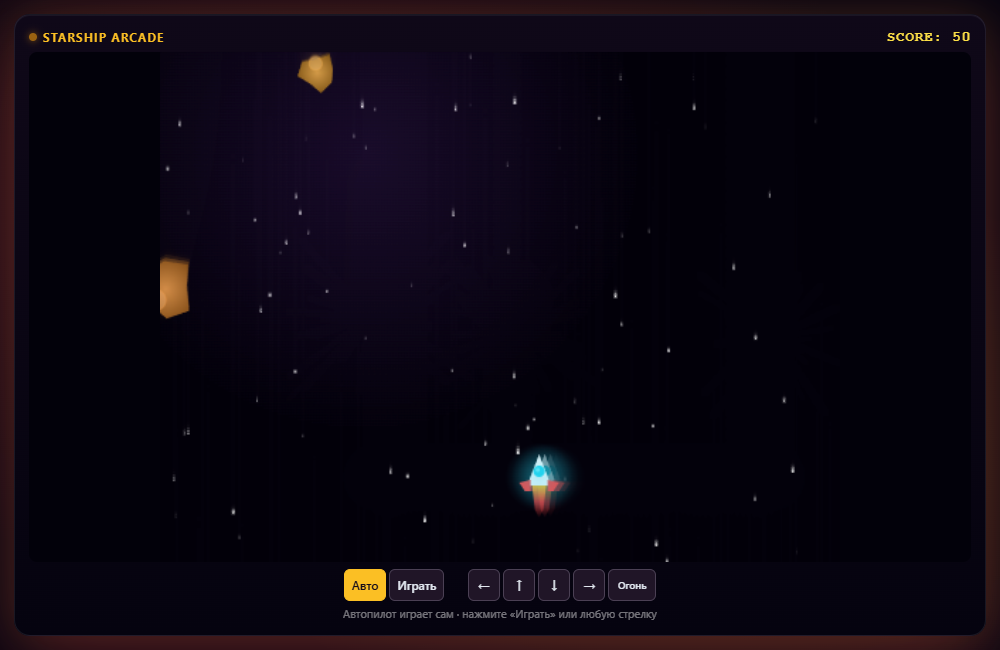

Описать задачу
Например, нужен список дел: в нём можно добавлять задачи, отмечать выполненные и сохранять изменения.
На индивидуальных занятиях ты будешь создавать программы с помощью нейросети. Преподаватель объяснит код и поможет исправить ошибки.

Открой игру, проверь поиск в кинотеке или попробуй интерфейс чата. Примеры работают прямо на странице.
Управление появится после запуска
Пример · браузерная игра
Управляй кораблём и сбивай астероиды. Можно играть самому или включить автопилот.
Это интерактивные демонстрационные проекты, а не работы конкретных учеников. Чат показывает заранее подготовленные ответы без подключения к нейросети; кинотека содержит вымышленные фильмы. Проекты курса перечислены в плане обучения.
Ребёнок описывает, что должна делать программа, и получает код от нейросети. С преподавателем он разбирает этот код и проверяет работу программы.
Например, нужен список дел: в нём можно добавлять задачи, отмечать выполненные и сохранять изменения.
Нейросеть предложит код. Преподаватель объяснит, за что отвечают его части и как изменить поведение программы.
Запустить программу и проверить её функции. Если что-то не работает, найти причину ошибки и исправить код.
«Сделай список дел. Пусть я добавляю задачи, отмечаю готовые, а после обновления страницы они сохраняются».
// Сохраняем задачи в браузере localStorage.setItem( 'myTasks', JSON.stringify(tasks) );
В начале курса ребёнок создаёт сайты и осваивает Python. На последних шести занятиях разрабатывает и защищает финальный проект.
Открыть все 48 занятийСайт, игра «Змейка», программы на Python, Telegram-бот и веб-приложение.
Начало программыСвой AI-репетитор, база данных, социальная сеть для класса, обработка фото и генерация картинок.
Модули 4–6Обработка голоса и видео, AI-секретарь и игры с нейросетями. Разработка, проверка и защита финального проекта.
Модули 7–10На уроке ребёнок работает над проектом вместе с преподавателем. Если задание вызывает трудности, преподаватель объясняет его подробнее.
Преподаватель помогает с задачей, разбирает ошибки и даёт обратную связь по проекту.
1 на 1Ребёнок и преподавательЗанятия онлайн из дома. Расписание согласуем перед стартом.
Работа с файлами, редактором кода и инструментами разработчика.
Ребёнок понимает, что уже получилось. Родители видят, чему он учится и какие проекты создаёт.
Оба тарифа включают 48 индивидуальных занятий по Vibe Coding. В PRO дополнительно входит курс-профессия на выбор.
При рассрочке на 12 месяцев
Полная стоимость — 71 244 ₽
При рассрочке на 24 месяца
Полная стоимость — 124 500 ₽
Показаны условия действующего предложения. Сумма в месяц для PRO округлена; итоговая стоимость — 124 500 ₽. Доступность и точные условия рассрочки уточняются при оформлении.
Преподаватель поможет установить редактор кода на первых занятиях. Заранее понадобится компьютер и интернет.
Посмотреть подробную программуКурс подходит детям без опыта. В первом модуле ребёнок устанавливает редактор, создаёт веб-страницу и первые проекты в браузере. Затем изучает Python и работу с нейросетями.
Ребёнок ставит задачу, разбирается в коде и проверяет результат. Нейросеть помогает собрать первую версию, а преподаватель помогает понять логику, найти ошибки и улучшить проект.
Компьютер или ноутбук, интернет и возможность общаться с преподавателем. Установка инструментов входит в начало программы. Требования к компьютеру обсудим перед первым уроком.
У каждого занятия есть конкретная практическая работа. В плане можно заранее посмотреть проект, инструменты и навыки по всем 48 урокам. Курс заканчивается защитой финального проекта.
Выберите подходящий вариант и обсудите его с методистом на встрече. Он поможет согласовать расписание и условия оплаты.